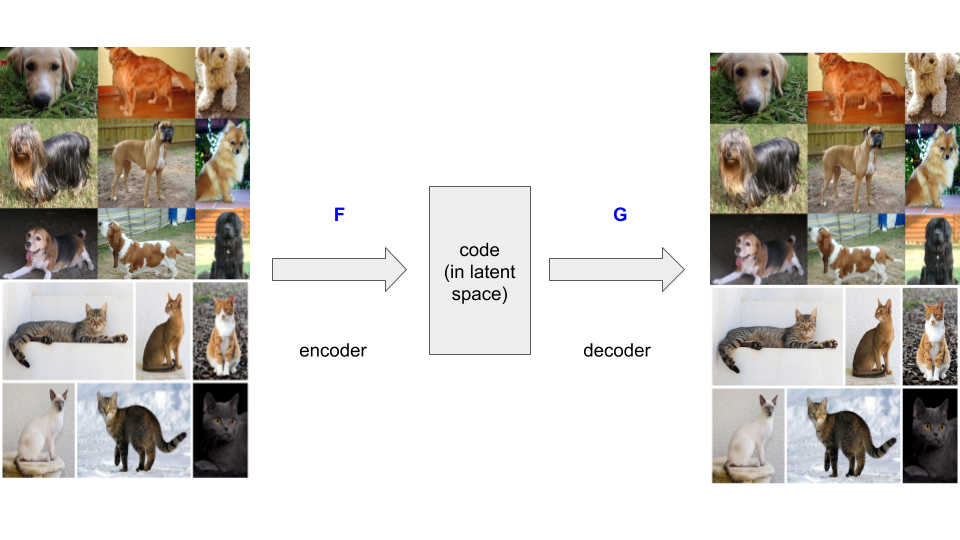
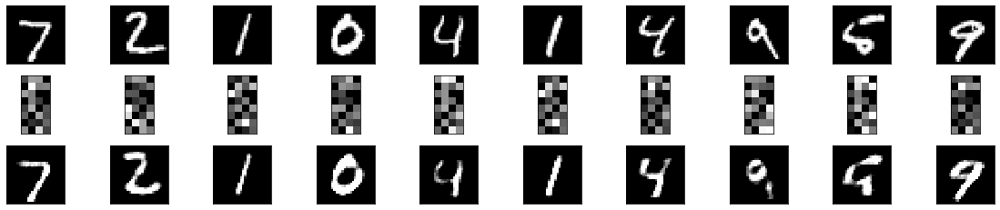
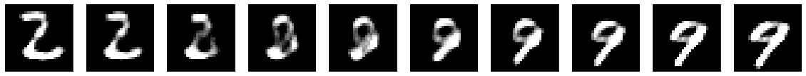
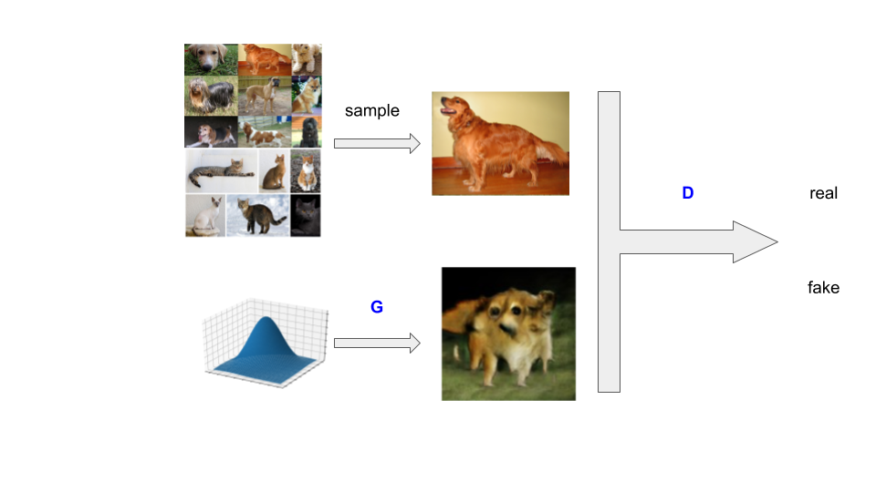
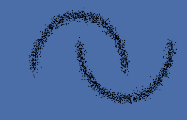

class: center, middle, title-slide count: false # Lesson 6 ## Unsupervised learning ## Autoencoders and generative adversarial networks <br/><br/> .bold[Marc Lelarge] --- # Overview of the course: 1- .grey[Course overview: machine learning pipeline] 2- .grey[PyTorch tensors and automatic differentiation] 3- .grey[Classification with deep learning] 4- .grey[Convolutional neural networks] 5- .grey[Embedding layers and dataloaders] 6- Unsupervised learning: auto-encoders and generative adversarial networks * .red[Deep learning architectures] - in PyTorch: recap! --- # Autoencoders (AE) ## practicals: denoising with AE # Generative Adversarial Networks (GAN) ## practicals: implementing conditional GAN and (simplified) InfoGAN --- # Autoencoders Autoencoders are used to learn compressed data representation in an .red[unsupervised manner]. Autoencoders can be seen as a simple example of .red[self-supervised learning]: the data provides the supervision! An autoencoder maps a space to itself and is [close to] the identity on the data. -- count: false .center[  ] Dimension reduction can be achieved with an autoencoder composed of an encoder $F$ from the original space to a latent space, and a decoder $G$ to map back to the original space. If the latent space is of lower dimension, the autoencoder has to capture a "good" representation of the data. --- # Autoencoders in PyTorch The simplest possible autoencoder with a single fully-connected neural layer as encoder and as decoder: ``` class AutoEncoder(nn.Module): def __init__(self, input_dim, encoding_dim): super(AutoEncoder, self).__init__() self.encoder = nn.Linear(input_dim, encoding_dim) self.decoder = nn.Linear(encoding_dim, input_dim) def forward(self, x): encoded = F.relu(self.encoder(x)) decoded = self.decoder(encoded) return decoded ``` -- count: false After training, we obtain: .center[  ] --- # Representation learning with autoencoders To get an intuition of the latent representation, we can pick two samples $x$ and $x'$ and interpolate samples along the line in the latent space: the line bewteen the codes obtained by the encoder $F$ for $x$ and $x'$ is defined by: for $\alpha\in [0,1]$ $$ (1-\alpha)F(x) + \alpha F(x'). $$ We use the decoder $G$ in order to get back in the original space from this embeddding in the latent space: $$ G((1-\alpha)F(x) + \alpha F(x')) $$ -- count: false Interpolating between digits two and nine: .center[  ] --- # .grey[Autoencoders (AE)] ## [practicals: denoising with AE](https://colab.research.google.com/github/mlelarge/dataflowr/blob/master/PlutonAI/06_AE_NoisyAE_colab.ipynb) # Generative Adversarial Networks (GAN) ## practicals: implementing conditional GAN and (simplified) InfoGAN --- # Generative Adversarial Networks (GAN) ## Learning high-dimension generative models The idea behing GANS is to train two networks jointly: * a discriminator $\mathbf{D}$ to classify samples as "real" or "fake" * a generator $\mathbf{G}$ to map a fixed distribution to samples that fool $\mathbf{D}$ .center[  ] .credit[ Goodfellow et al. [Generative adversarial nets](https://arxiv.org/abs/1406.2661). 2014. ] --- # GAN learning The discriminator $\mathbf{D}$ is a classifier and $\mathbf{D}(x)$ is interpreted as the probability for $x$ to be a real sample. The generator $\mathbf{G}$ takes as input a Gaussian random variable $z$ and produces a fake sample $\mathbf{G}(z)$. The discriminator and the generator are learned alternatively, i.e. when parameters of $\mathbf{D}$ are learned $\mathbf{G}$ is fixed and vice versa. -- When $\mathbf{G}$ is fixed, the learning of $\mathbf{D}$ is the standard learning process of a binary classifier (Sigmoid layer + BCE loss). -- count: false The learning of $\mathbf{G}$ is more subtle. The performance of $\mathbf{G}$ is evaluated thanks to the discriminator $\mathbf{D}$, i.e. the generator .red[maximizes] the loss of the discriminator. --- # Learning of $\mathbf{D}$ The task of $\mathbf{D}$ is to distinguish real points $x_1,\dots, x_N$ from generated points $\mathbf{G}(z_1),\dots, \mathbf{G}(z_N)$. The last layer of $\mathbf{D}$ is a Sigmoid layer, then learning of $\mathbf{D}$ is done thanks to the binary cross-entropy loss: $$ \mathcal{L}(\mathbf{D},\mathbf{G}) = -\sum_{n=1}^N \log \mathbf{D}(x_n)+\log \left( 1-\mathbf{D}(\mathbf{G}(z_n))\right). $$ -- count: false For a fixed generator $\mathbf{G}$, the optimal discriminator is $$ \mathbf{D}^* = \arg\min\mathcal{L}(\mathbf{D},\mathbf{G}). $$ --- # Learning of $\mathbf{G}$ The task of $\mathbf{G}$ is to fool the discriminator. For a fixed discriminator $\mathbf{D}$, the optimal generator is $$ \mathbf{G}^* = \color{red}{\arg\max} \mathcal{L}(\mathbf{D},\mathbf{G})= \arg\max -\sum_{n=1}^N \log \left( 1-\mathbf{D}(\mathbf{G}(z_n))\right). $$ In practice, the loss for $\mathbf{G}$ is often replaced by: $$ \mathbf{G}^* = \arg\max \sum_{n=1}^N \log \left(\mathbf{D}(\mathbf{G}(z_n))\right). $$ --- # Loss function for $\mathbf{G}$ .center[ <img src="images/lesson6/loss_G.png" style="width: 500px;" /> ] When the generator is weak compared to the discriminator, i.e. when $\mathbf{D}(\mathbf{G}(z)<<1$, the modified loss boosts the learning of the generator thanks to the high slope of $\log$ around zero. --- # GAN for 2-d point cloud Creating the generator and discriminator. ``` import torch import torch.nn as nn z_dim = 32 hidden_dim = 128 net_G = nn.Sequential(nn.Linear(z_dim,hidden_dim), nn.ReLU(), nn.Linear(hidden_dim, 2)) net_D = nn.Sequential(nn.Linear(2,hidden_dim), nn.ReLU(), nn.Linear(hidden_dim,1), nn.Sigmoid()) ``` The point cloud will be given as a numpy array X. .center[  ] --- ``` batch_size, lr = 50, 1e-3 nb_epochs = 500 optimizer_G = torch.optim.Adam(net_G.parameters(),lr=lr) optimizer_D = torch.optim.Adam(net_D.parameters(),lr=lr) for e in range(nb_epochs): np.random.shuffle(X) real_samples = torch.from_numpy(X).type(torch.FloatTensor) for real_batch in real_samples.split(batch_size): #improving D z = torch.empty(batch_size,z_dim).normal_() fake_batch = net_G(z) D_scores_on_real = net_D(real_batch) D_scores_on_fake = net_D(fake_batch) loss = -torch.mean(torch.log(1-D_scores_on_fake) + torch.log(D_scores_on_real)) optimizer_D.zero_grad() loss.backward() optimizer_D.step() # improving G z = torch.empty(batch_size,z_dim).normal_() fake_batch = net_G(z) D_scores_on_fake = net_D(fake_batch) loss = -torch.mean(torch.log(D_scores_on_fake)) optimizer_G.zero_grad() loss.backward() optimizer_G.step() ``` --- # Loss curves .center[ <img src="images/lesson6/losses.png" style="width: 600px;" /> ] Contrary to standard loss minimization, we have no guarantee here that the network will stabilize. It can very well oscillate without convergence. --- #GAN in action .center[ <img src="images/lesson6/GAN_action.gif" style="width: 600px;" /> ] A GAN fitting double moons. --- # Mode collapse The goal of a GAN is to find the best generator against any discriminator, i.e. $ \mathbf{G}^* = \arg\max \min_D \mathcal{L}(\mathbf{D},\mathbf{G}). $ But optimization alternates between finding the best generator against the current discriminator and finding the best discriminator against the current generator. In particular, we do not solve the $\max\min$ problem but alternate between the two problems. -- As a result, a possible equilibrium of the game observed in practice, is for the generator to generates only 'easy' samples, i.e. those most difficult to classify for the discriminator. --- # Mode collapse on MNIST .center[ <img src="images/lesson6/fake_images-200.png" style="width: 250px;" /> ] Those generated digits are clearly not following the origninal distribution of MNIST dataset and ones for example seems over-represented. --- # Conditional GAN .center[ <img src="images/lesson6/CGAN.png" style="width: 500px;" /> ] When labels are available, mode collapse can be mitigated (more details in practicals). .footnote[Mirza et al. [Conditional Generative Adversarial Nets](https://arxiv.org/abs/1411.1784). 2014.] --- # InfoGAN .center[ <img src="images/lesson6/IGAN.png" style="width: 500px;" /> ] Even when labels are not available, mode collapse can be mitigated (more details in practicals). .footnote[Chen et al. [InfoGAN: Interpretable Representation Learning by Information Maximizing Generative Adversarial Nets](https://arxiv.org/abs/1606.03657). 2016.] --- #IGAN in action .center[ <img src="images/lesson6/IGAN_action.gif" style="width: 700px;" /> ] An InfoGAN fitting double moons. --- # Deep Convolutional GAN "Historical attempts to scale up GANs using CNNs to model images have been unsuccessful. (...) We also encountered difficulties attempting to scale GANs using CNN architectures commonly used in the supervised literature. However, after extensive model exploration we identified a family of architectures that resulted in stable training across a range of datasets and allowed for training higher resolution and deeper generative models." .footnote[Radford et al. [Unsupervised Representation Learning with Deep Convolutional Generative Adversarial Networks](https://arxiv.org/abs/1511.06434). 2015.] --- # DC-GAN rules - replace pooling layers with strided convolutions in $\mathbf{D}$ and strided transposed convolution in $\mathbf{G}$. - use batchnorm in both $\mathbf{D}$ and $\mathbf{G}$. - remove fully connected hidden layers. - use `ReLU` in $\mathbf{G}$ except for the output using `Tanh`. - use `LeakyReLU` in $\mathbf{D}$ for all layers. --- # .grey[Autoencoders (AE)] ## [practicals: denoising with AE](https://colab.research.google.com/github/mlelarge/dataflowr/blob/master/PlutonAI/06_AE_NoisyAE_colab.ipynb) # .grey[Generative Adversarial Networks (GAN)] ## [practicals: implementing conditional GAN and (simplified) InfoGAN](https://colab.research.google.com/github/mlelarge/dataflowr/blob/master/PlutonAI/06_GAN_double_moon_colab.ipynb) --- class: end-slide, center count: false The end.